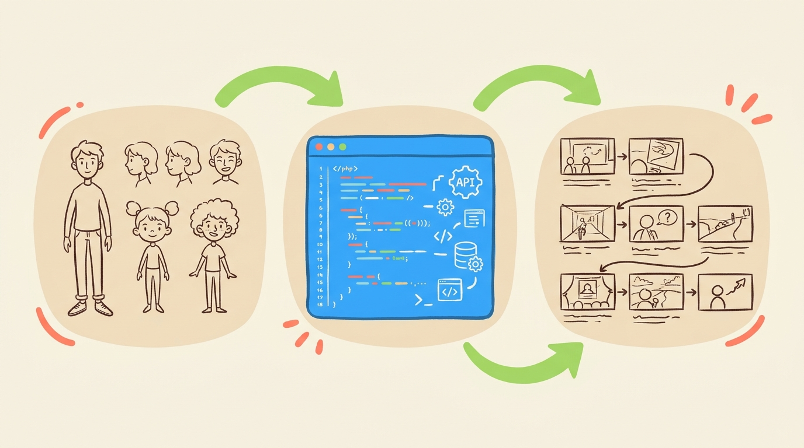
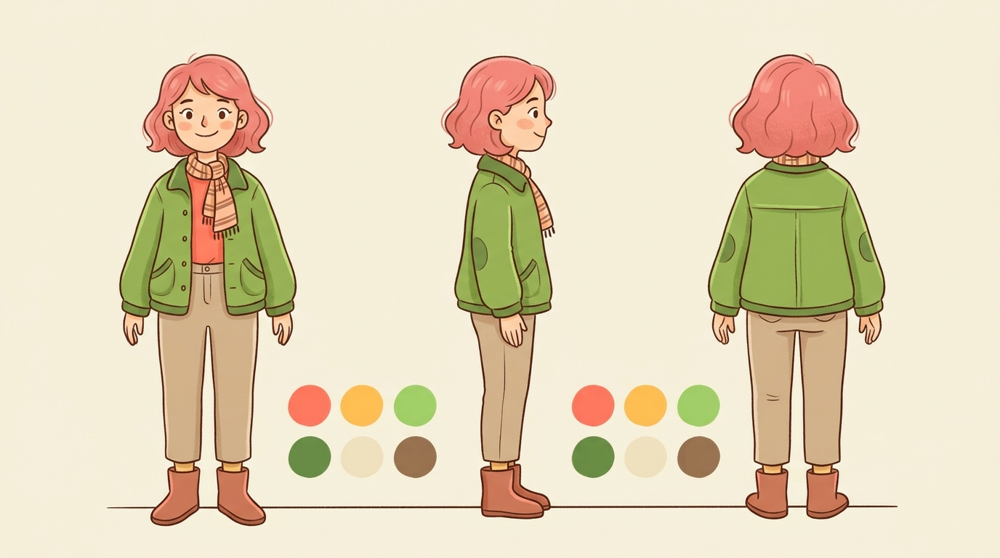
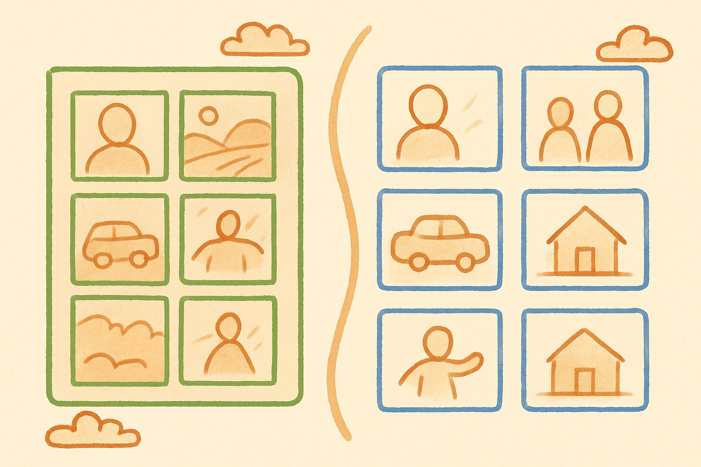
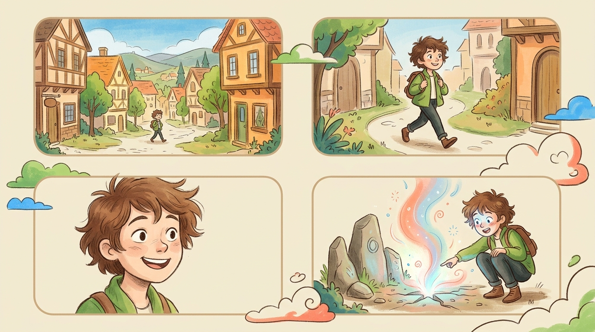

1
API 架構總覽
OpenAI 有兩條生圖路徑，做 Storyboard 強烈建議用 Responses API：
| 路徑 | 端點 | 適合場景 |
|---|---|---|
| Image API | images.generate / images.edit | 單張生成、簡單編輯 |
| Responses API | responses.create + tools | Storyboard 首選——多輪對話、自動記角色 |
模型選擇
| 模型 | 用途 |
|---|---|
gpt-image-2（最新） | 最終出圖，文字渲染最強 |
gpt-image-1-mini | 便宜快速，適合草稿 |

核心流程：角色設定圖 → API 多輪生成 → 分鏡圖輸出
2
程式碼範例
單張生成（Image API）
from openai import OpenAI
import base64
client = OpenAI()
result = client.images.generate(
model="gpt-image-2",
prompt="A veterinarian with a baby otter, children's book style",
size="1024x1024",
quality="high"
)
image_bytes = base64.b64decode(result.data[0].b64_json)
with open("output.png", "wb") as f:
f.write(image_bytes)多輪生成（Responses API）—— Storyboard 最佳方案
# 第一輪：生成角色設定圖
response1 = client.responses.create(
model="gpt-5.5",
input="Generate a character reference sheet: front, side,
back views of a young cyberpunk hacker with neon pink
bob hair. White background, concept art style.",
tools=[{"type": "image_generation"}],
)
# 第二輪：用 previous_response_id 保持角色一致
response2 = client.responses.create(
model="gpt-5.5",
previous_response_id=response1.id,
input="Panel 1: The same character sits in a dark room
lit by monitors. Cinematic wide shot, cyberpunk noir.",
tools=[{"type": "image_generation"}],
)
# 第三輪：繼續下一格
response3 = client.responses.create(
model="gpt-5.5",
previous_response_id=response2.id,
input="Panel 2: Close-up of her face. She notices
something alarming. Same character, same outfit.",
tools=[{"type": "image_generation"}],
)
# 提取所有圖片
for i, resp in enumerate([response1, response2, response3]):
for output in resp.output:
if output.type == "image_generation_call":
img = base64.b64decode(output.result)
with open(f"panel_{i}.png", "wb") as f:
f.write(img)上傳參考圖合成
def upload(path):
with open(path, "rb") as f:
return client.files.create(file=f, purpose="vision").id
char_id = upload("character_sheet.png")
bg_id = upload("background_ref.png")
response = client.responses.create(
model="gpt-5.5",
input=[{
"role": "user",
"content": [
{"type": "input_text",
"text": "Create a storyboard panel: the character
walks through this environment. Maintain exact
design."},
{"type": "input_image", "file_id": char_id},
{"type": "input_image", "file_id": bg_id}
],
}],
tools=[{"type": "image_generation"}],
)3
角色一致性——五大方法
這是 Storyboard 最大的挑戰。以下五種方法可以組合使用：

方法 A 範例：角色設定圖（前視 / 側視 / 背視 + 色票）
最可靠
A. 角色設定圖
先生成多角度設定圖，後續每一幀都上傳作為參考。
輔助強化
B. Preservation Statements
每次 prompt 重複外貌描述 + 寫 "Do not redesign the character"。
API 層級
C. Multi-Turn API
用 previous_response_id 串接，讓模型記住前面的角色。
設計技巧
D. Visual Markers
獨特配件、特殊髮色、顯眼服裝，每次 prompt 都要提及。
電影技巧
E. Establishing Shot
從中景建立角色（不要廣角），所有子鏡頭都回到這張為參考。
Prompt 範例：角色設定圖
"Character model sheet: a young female cyberpunk hacker with neon pink bob hair, wearing an oversized glowing tech-jacket. Show three-view drawings (front, side, back), facial expression variations, detailed clothing breakdown, and color palette. White background, professional concept art."
💡
組合技巧：同時使用 A + B + C 效果最好——上傳角色設定圖、用 multi-turn 串接、並重複關鍵外貌描述。
4
分鏡結構

方式 A（單張多格 Grid）vs 方式 B（逐格生成）
方式 A：單張多格 Grid
一次生成整頁分鏡板，適合快速 pre-visualization。缺點是單格解析度低。
"Create a 6-panel film storyboard in a 3x2 grid layout. Each panel has a white margin border and info strip underneath. Scene: [場景]. Style: pencil sketch storyboard, cinematic framing."
方式 B：逐格生成（高品質）
每格單獨生成，用 Responses API 串接，品質最高：
Panel 1: Wide establishing shot — 角色進入暗巷
Panel 2: Medium shot — 角色注意到牆上的東西
Panel 3: Close-up — 角色震驚的表情
Panel 4: Over-the-shoulder — 揭示他看到了什麼
逐格生成範例：從全景到特寫的電影式分鏡序列
方式 C：Storyboard → 影片完整工作流
來自 Tao Prompts（47K views）的端到端流程：
- 上傳角色參考圖 → 一句話讓 GPT Image 2 生成完整 12 格 storyboard
- 另外生成角色設定圖（character reference sheet）
- 裁切 storyboard（每 4 格一行）
- 每行轉影片：上傳裁切行 + 角色設定圖 → 搭配影片生成工具
- 轉場處理：用上一段影片的最後一幀作為下一段起始參考
- 延伸故事：上傳第一頁 + 設定圖 → prompt「接下來 12 格」
5
風格一致性技巧
分離可變與不可變
"Change only the character's pose. Keep everything else the same — style, palette, background, lighting."
用具體風格詞
✅ "film grain, warm golden hour lighting, 35mm lens"
❌ "beautiful cinematic"
指定畫面構成
明確寫 framing、perspective、lighting，不要讓模型自己決定。
先低後高品質
用 quality="low" 做 10-20 張草稿，滿意後用 quality="high" 出正式版。
6
重要參數與成本
| 參數 | Storyboard 建議值 |
|---|---|
size | 1536x1024（16:9）或 2048x2048（多格 grid） |
quality | 草稿 low，最終 high |
n | 4，選最好的一張 |
moderation | low（較少限制） |
每張成本（gpt-image-2, 1024x1024）
Low
$0.006
/ 張
Medium
$0.053
/ 張
High
$0.211
/ 張
💰
省錢策略：Low 品質做 20 張草稿（$0.12）→ 挑 4 張用 High 出正式版（$0.84）→ 不到 $1 就有一套高品質分鏡。
7
注意事項與限制
⚠️
- gpt-image-2 不支援透明背景——需用 gpt-image-1.5
- 沒有
input_fidelity參數——傳了會報錯 - Multi-turn 需要
store=True（預設值），設 False 無法引用前面的圖 - 廣角鏡頭臉部會失真——永遠從中景開始建立角色
- 多格 storyboard 偶爾重複 panel——用 edit 功能修正
8
參考來源
文章 / 文件
- OpenAI Image Generation API Guide
- GPT Image Generation Prompting Guide (Official Cookbook)
- Atlas Cloud: Seedance 2.0 + GPT Image 2 Tutorial
- AI-Flow: Consistent Character Generation Workflow
- Awesome GPT-Image-2 API Prompts (GitHub)
YouTube 影片
- Tao Prompts: Create Seamless AI Films of ANY Length（47K views）
- fal: GPT Image 2 is NEXT LEVEL（4K views）
- AI Samson: This One Prompt Fixes AI Character Consistency（223K views）
- AI Madame: GPT Image 2 + Multiple Characters（7.7K views）